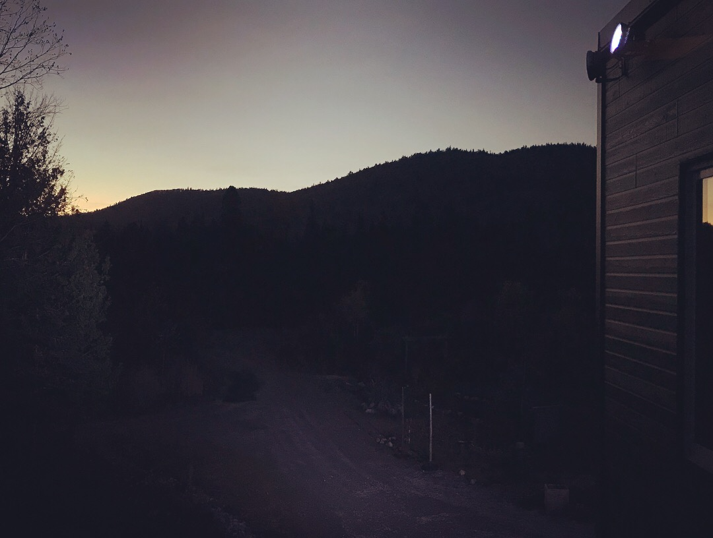

MY TIMELINE
IMPORTANT EVENTS OF MY LIFE

1998
I was born in 1998 (in the late spring) in Baoding City China, then move to Beijing city, now in Montreal Quebec. My father Huadong Zhang, a mechanical engineer. His mother Xueqin Cui, adevout and strong-willed woman, raised me.

2000
I first lived in a small apartment with my parents. Then we moved to a big townhouse in Baoding City, I started kindergarten at the area, around 20 minutes from home. I was very happy with the new house.
2004
I was a student in primary school at the age of 6. The computer was very rare at that time. But my dad bought me one for me in 2004. I played games and watched videos on this computer. I liked that gift a lot.
2006
During the winter of 2006, it was very special because it was very cold. I went to the ice lantern festival with my parents. It was really beautiful.
2008
In 2008, it was the Beijing Olympics. That year, I visited the Beijing Olympic Stadium and it was beautiful.
2010
In 2010, I traveled to Hong Kong with my mother. We visited Disneyland Park especially.
2012
Afterwards, I traveled to the United States on my own.

2015
I am currently studying in Canada since 2015. I will continue my studies in Canada. I will finish my studies at the Lasalle College in 2020. The year 2020 is very special for me because I want to find a job in the company Ubisoft.

2017+
Move on in life ~